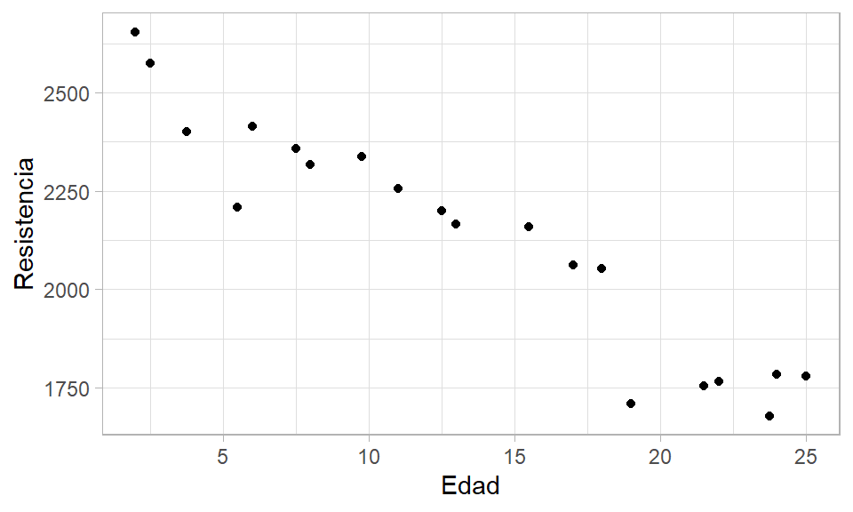
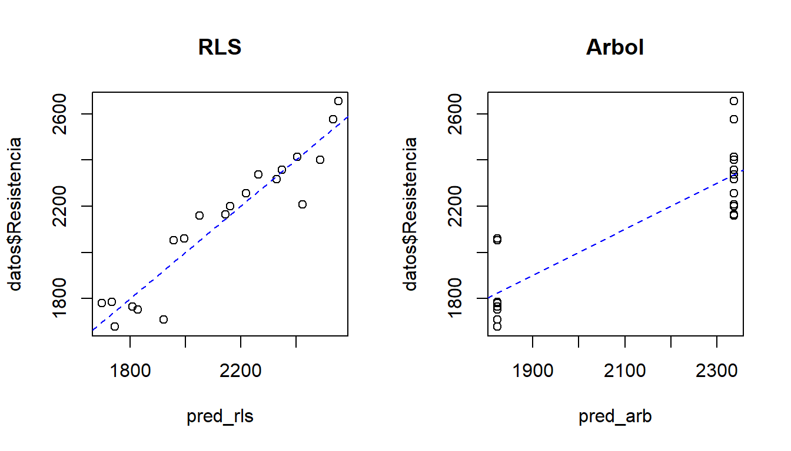

5 Regresión lineal versus árboles de regresión
En este capítulo se muestra una comparación entre modelos de regresión y árboles de regresion.
Regresión lineal
El modelo de regresión lineal simple es uno de los más populares en modelación. Este modelo se puede resumir a continuación.
\[\begin{align} y_i &\sim N(\mu_i, \sigma^2), \\ \mu_i &= \beta_0 + \beta_1 x_i, \\ \sigma^2 &= \text{constante} \end{align}\]
Arboles de regresión
Una explicación de los árboles de regresión puede ser consultada en el capítulo 1.
Las librerías en R para implementar árboles de regresión son:
Ejemplo
Como ilustración vamos a usar los datos del ejemplo 2.1 del libro de Montgomery, Peck and Vining (2003). En el ejemplo 2.1 los autores ajustaron un modelo de regresión lineal simple para explicar la Resistencia de una soldadura en función de la Edad de la misma.
A continuación el código para cargar los datos y una muestra de las 6 primeras observaciones de la base de datos, en total tenemos 20 observaciones.
file <- "https://raw.githubusercontent.com/fhernanb/datos/master/propelente"
datos <- read.table(file=file, header=TRUE)
head(datos) # shows the first 6 rows## Resistencia Edad
## 1 2158.70 15.50
## 2 1678.15 23.75
## 3 2316.00 8.00
## 4 2061.30 17.00
## 5 2207.50 5.50
## 6 1708.30 19.00Para crear un diagrama de dispersión que nos muestre la relación entre las dos variables usamos las siguientes instrucciones.

De la figura anterior se ve claramente que a medida que aumenta la edad de la soldadura, la resistencia que ella ofrece disminuye. Adicionalmente, se observa que la relación entre las variables es lineal con una dispersión que parece constante.
¿Quién estima mejor? ¿un modelo de regresión lineal simple o un árbol?
¿Qué hay dentro de modelo de regresión lineal simple?
##
## Call:
## lm(formula = Resistencia ~ Edad, data = datos)
##
## Residuals:
## Min 1Q Median 3Q Max
## -215.98 -50.68 28.74 66.61 106.76
##
## Coefficients:
## Estimate Std. Error t value Pr(>|t|)
## (Intercept) 2627.822 44.184 59.48 < 2e-16 ***
## Edad -37.154 2.889 -12.86 1.64e-10 ***
## ---
## Signif. codes: 0 '***' 0.001 '**' 0.01 '*' 0.05 '.' 0.1 ' ' 1
##
## Residual standard error: 96.11 on 18 degrees of freedom
## Multiple R-squared: 0.9018, Adjusted R-squared: 0.8964
## F-statistic: 165.4 on 1 and 18 DF, p-value: 1.643e-10¿Qué hay dentro de modelo del arbol?
## Call:
## rpart(formula = Resistencia ~ Edad, data = datos, method = "anova")
## n= 20
##
## CP nsplit rel error xerror xstd
## 1 0.7480619 0 1.0000000 1.132145 0.2311264
## 2 0.0100000 1 0.2519381 1.132145 0.2311264
##
## Variable importance
## Edad
## 100
##
## Node number 1: 20 observations, complexity param=0.7480619
## mean=2131.358, MSE=84686.88
## left son=2 (8 obs) right son=3 (12 obs)
## Primary splits:
## Edad < 16.25 to the right, improve=0.7480619, (0 missing)
##
## Node number 2: 8 observations
## mean=1823.094, MSE=19439.95
##
## Node number 3: 12 observations
## mean=2336.867, MSE=22599.79Construyamos nuevamente el árbol pero explorando todas las opciones de la función prp.
prp(arb, main = "",
nn = TRUE, # display the node numbers
fallen.leaves = TRUE, # put the leaves on the bottom of the page
shadow.col = "gray", # shadows under the leaves
branch.lty = 3, # draw branches using dotted lines
branch = .5, # change angle of branch lines
faclen = 0, # faclen = 0 to print full factor names
trace = 1, # print the auto calculated cex, xlim, ylim
split.cex = 1.2, # make the split text larger than the node text
split.prefix = "is ", # put "is " before split text
split.suffix = "?", # put "?" after split text
split.box.col = "lightblue", # lightgray split boxes (default is white)
split.border.col = "darkgray", # darkgray border on split boxes
split.round = 0.5) # round the split box corners a tad## cex 1 xlim c(-0.65, 1.65) ylim c(-0.15, 1.15)
A continuación las predicciones con ambos modelos.
Dibujemos \(y_i\) versus \(\hat{y}_i\).
par(mfrow=c(1, 2))
plot(x=pred_rls, y=datos$Resistencia, main="RLS")
abline(a=0, b=1, lty="dashed", col="blue")
plot(x=pred_arb, y=datos$Resistencia, main="Arbol")
abline(a=0, b=1, lty="dashed", col="blue")
Vamos a calcular \(Cor(y_i, \hat{y}_i)\).
## [1] 0.9496533## [1] 0.8649057Calculemos ahora el Error Cuadrático Medio \(ECM=\frac{1}{n}\sum(y_i-\hat{y}_i)^2\).
## [1] 8312.743## [1] 21335.85¿Cuál método prefiere usted?
Estudio de simulación para comparar ambos métodos
El objetivo es comparar ambos modelos repetidas veces, para esto vamos a simular conjuntos de datos que tengan un comportamiento lineal y parecido a los datos del ejemplo. El modelo que vamos a considerar es el siguiente:
\[\begin{align} y_i &\sim N(\mu_i, \sigma^2), \\ \mu_i &= 2627 - 37 x_i, \\ \sigma &= 96, \\ x &\sim U(2, 25) \end{align}\]
Vamos a crear una función generadora de datos.
gen_dat <- function(n) {
x <- runif(n=n, min=2, max=25)
media <- 2627 - 37 * x
y <- rnorm(n=n, mean=media, sd=96)
data.frame(x=x, y=y)
}Generemos unos datos de prueba y graficamos los datos.

Usando los datos de prueba vamos a ajustar los modelos y luego calcularemos los indicadores.
datos_train <- gen_dat(n=20) # Para entrenar
datos_test <- gen_dat(n=20) # Para validar
rls <- lm(y ~ x, data=datos_train)
arb <- rpart(y ~ x, data=datos_train)
pred_rls <- predict(object=rls, newdata=datos_test)
pred_arb <- predict(object=arb, newdata=datos_test)
cor(datos_test$y, pred_rls)## [1] 0.9435621## [1] 0.8532777## [1] 6315.509## [1] 18797.32Ahora vamos a realizar el estudio de simulación para explorar el efecto de \(n = 10, 20, 40\) sobre el \(ECM\) usando 5 réplicas para cada \(n\), este es un estudio de simulación “naive” pero ilustrativo.
n <- c(10, 20, 40)
nrep <- 5
result <- numeric()
for (i in n) {
for(k in 1:nrep) {
datos_train <- gen_dat(n=i) # Para entrenar
datos_test <- gen_dat(n=i) # Para validar
rls <- lm(y ~ x, data=datos_train)
arb <- rpart(y ~ x, data=datos_train)
pred_rls <- predict(object=rls, newdata=datos_test)
pred_arb <- predict(object=arb, newdata=datos_test)
ecm1 <- mean((datos_test$y - pred_rls)^2)
ecm2 <- mean((datos_test$y - pred_arb)^2)
result <- rbind(result, c(i, ecm1, ecm2)) # No eficiente pero sirve
}
}
colnames(result) <- c("n", "ecm_lrs", "ecm_arb")
result <- as.data.frame(result)
result## n ecm_lrs ecm_arb
## 1 10 8597.165 104417.12
## 2 10 15695.320 112232.48
## 3 10 4556.974 48443.91
## 4 10 13483.776 68809.01
## 5 10 6460.402 103225.49
## 6 20 9538.586 19163.75
## 7 20 9858.634 22379.97
## 8 20 11382.912 29909.28
## 9 20 10469.388 40075.03
## 10 20 7794.022 21096.72
## 11 40 6523.026 17283.41
## 12 40 10410.161 15706.15
## 13 40 11755.858 20179.47
## 14 40 15439.888 22498.47
## 15 40 11813.328 19401.37El objeto result tiene los resultados de la simulación, vamos a calcular el \(ECM\) promedio para rls y árboles diferenciando por \(n\).
library(dplyr)
result %>% group_by(n) %>% summarise(ecm_medio_lrs=mean(ecm_lrs),
ecm_medio_arb=mean(ecm_arb))## # A tibble: 3 x 3
## n ecm_medio_lrs ecm_medio_arb
## <dbl> <dbl> <dbl>
## 1 10 9759. 87426.
## 2 20 9809. 26525.
## 3 40 11188. 19014.Retos
A continuación los retos que usted debe aceptar.
- Extienda el estudio de simulación para otros valores de \(n\) y aumentando el número de repeticiones
nrep, decida usted los valores. - Con los resultados anteriores haga un gráfico de \(ECM\) promedio versus \(n\) para rls y árboles en la misma figura.
- ¿Se iguala \(ECM\) promedio del árbol con el de regresión para algún valor de \(n\)?
- ¿Cuál técnica presenta el \(ECM\) menor?
- ¿Es posible encontrar un \(ECM=0\) para algún valor de \(n\)?
- ¿Para qué sirve el paquete
dplyr? - ¿Qué es un
tibble?